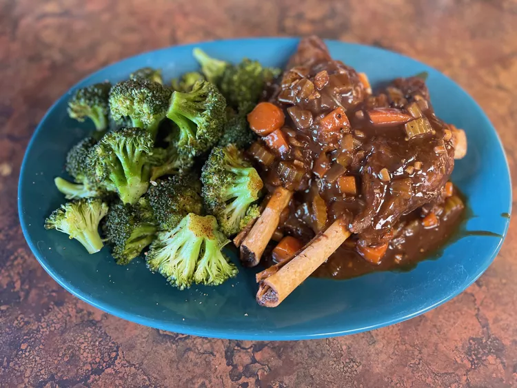

Stout braised lamb shanks

Great easy to cook meal for four!
This hearty Irish lamb shank stew is perfect if you feel like having something a little different on St. Patrick's Day.
- 1 tablespoon vegetable oil
- 4 lamb shanks
- 1 onion, chopped
- 4 cloves garlic, chopped
- 2 carrots, chopped
- 2 celery ribs, chopped
- 2 tablespoons tomato paste
- 1 (14 ounce) can beef broth
- 1 (12 fluid ounce) bottle stout (such as Guinness®) or porter
- 3 sprigs fresh thyme
- 3 sprigs fresh parsley
- 1 bay leaf
- 1 sprig fresh rosemary
- salt and pepper to taste